Carolina BarbecuePeople (25)
Pitmasters, families, writers and organizers.
Cooks (2)
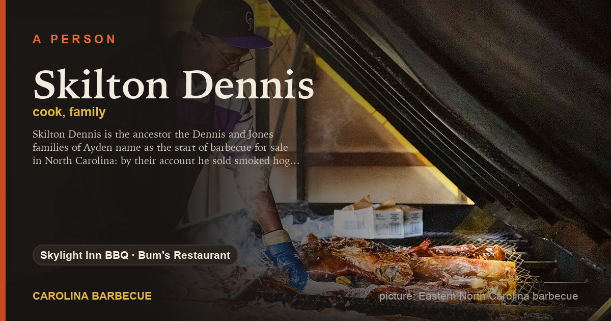
Skilton DennisSkilton M. Dennis
Skilton Dennis is the ancestor the Dennis and Jones families of Ayden name as the start of barbecue for sale in North Carolina: by their account he sold smoked hog meat and cornbread from a wagon in 1830, and Otter…
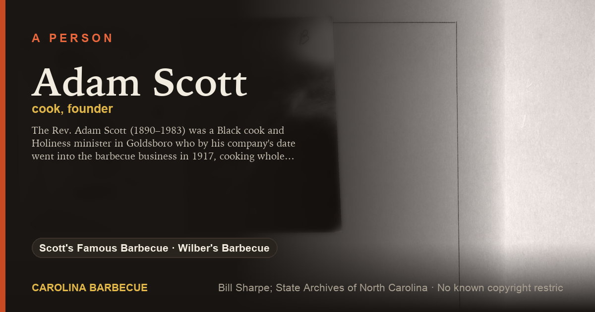
Adam ScottRev. Adam Scott, Elder Adam Scott
The Rev. Adam Scott (1890–1983) was a Black cook and Holiness minister in Goldsboro who by his company's date went into the barbecue business in 1917, cooking whole hogs in his back yard and selling chopped pork with a…
Founders (4)
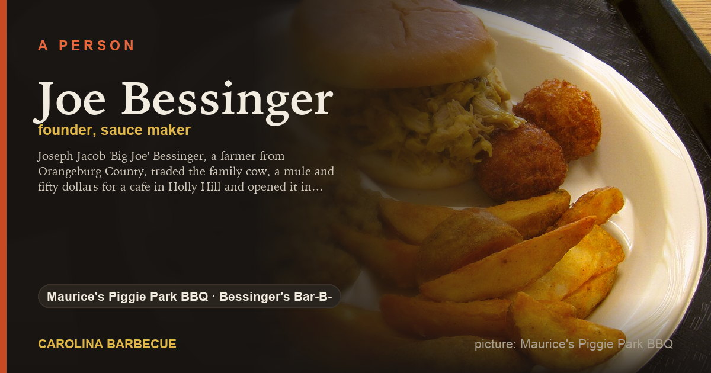
Joe BessingerJoseph Jacob Bessinger, Big Joe Bessinger, Joseph Bessinger Sr.
Joseph Jacob 'Big Joe' Bessinger, a farmer from Orangeburg County, traded the family cow, a mule and fifty dollars for a cafe in Holly Hill and opened it in 1939 serving pork with a mustard-based sauce — the Golden…
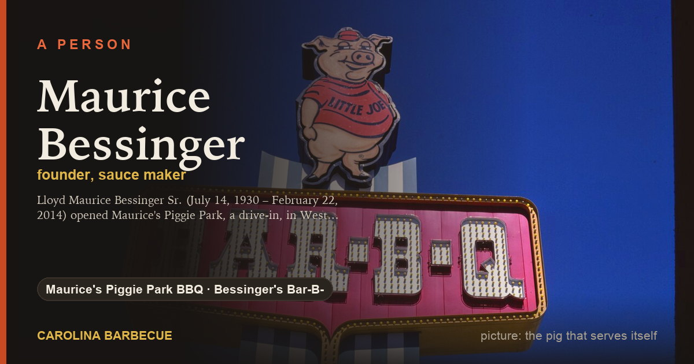
Maurice BessingerLloyd Maurice Bessinger Sr., L. Maurice Bessinger
Lloyd Maurice Bessinger Sr. (July 14, 1930 – February 22, 2014) opened Maurice's Piggie Park, a drive-in, in West Columbia in 1953 with his brother Joe Jr., built it into a chain, and bottled his father's mustard sauce…
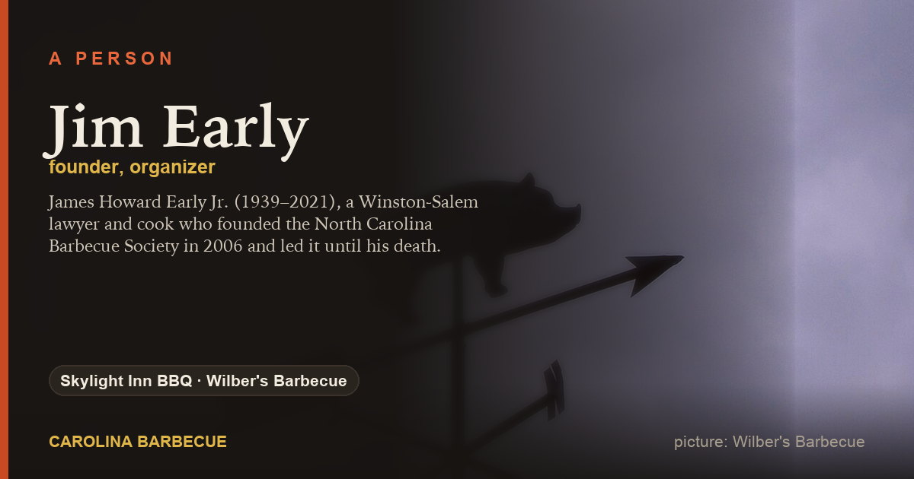
Jim EarlyJames Howard Early Jr., Chef Early
James Howard Early Jr. (1939–2021), a Winston-Salem lawyer and cook who founded the North Carolina Barbecue Society in 2006 and led it until his death.
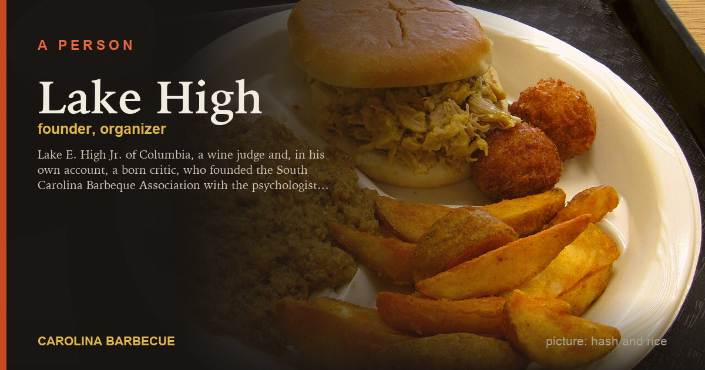
Lake HighLake E. High Jr., Lake Edward High Jr.
Lake E. High Jr. of Columbia, a wine judge and, in his own account, a born critic, who founded the South Carolina Barbeque Association with the psychologist Walter Rolandi in 2004 to train judges and promote the state's…
Pitmasters (12)
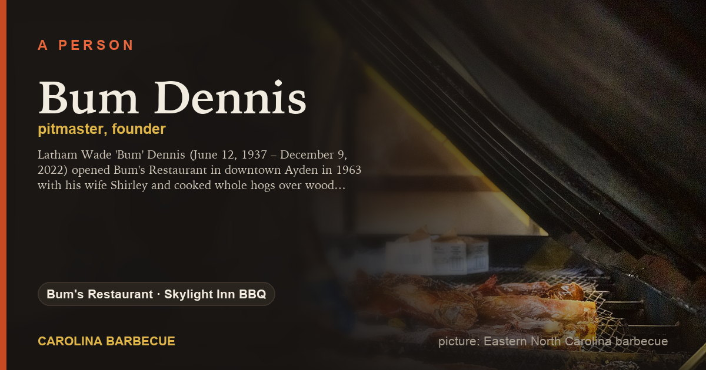
Bum DennisLatham Dennis, Latham Wade 'Bum' Dennis
Latham Wade 'Bum' Dennis (June 12, 1937 – December 9, 2022) opened Bum's Restaurant in downtown Ayden in 1963 with his wife Shirley and cooked whole hogs over wood coals there for the rest of his working life, with a…
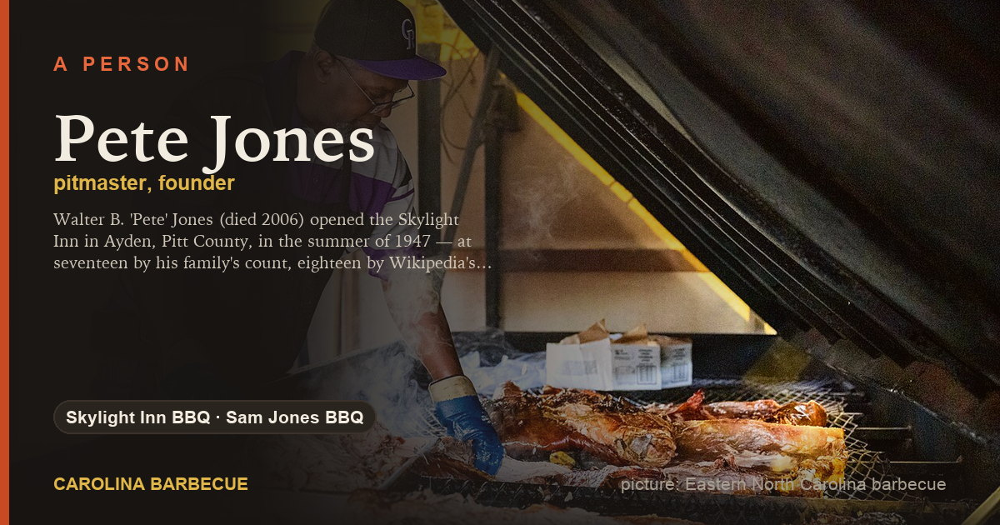
Pete JonesWalter B. Jones, Walter B. 'Pete' Jones
Walter B. 'Pete' Jones (died 2006) opened the Skylight Inn in Ayden, Pitt County, in the summer of 1947 — at seventeen by his family's count, eighteen by Wikipedia's — and cooked whole hogs over wood coals there for…
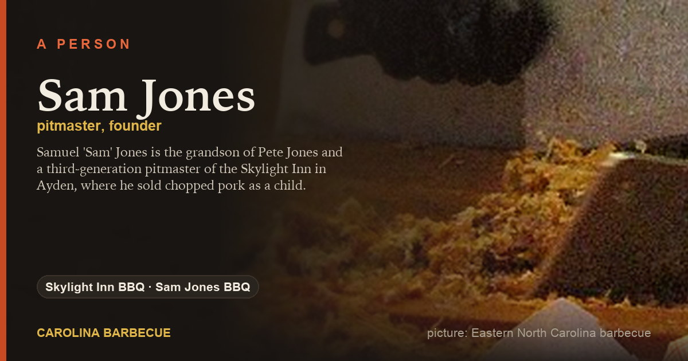
Sam JonesSamuel Jones
Samuel 'Sam' Jones is the grandson of Pete Jones and a third-generation pitmaster of the Skylight Inn in Ayden, where he sold chopped pork as a child.
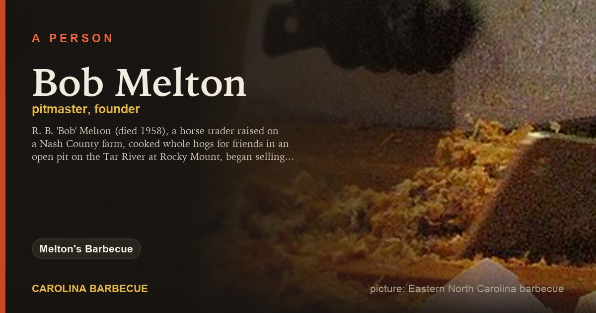
Bob MeltonR. B. Melton, Robert Melton
R. B. 'Bob' Melton (died 1958), a horse trader raised on a Nash County farm, cooked whole hogs for friends in an open pit on the Tar River at Rocky Mount, began selling barbecue there in 1922, and in 1924 built the shed…
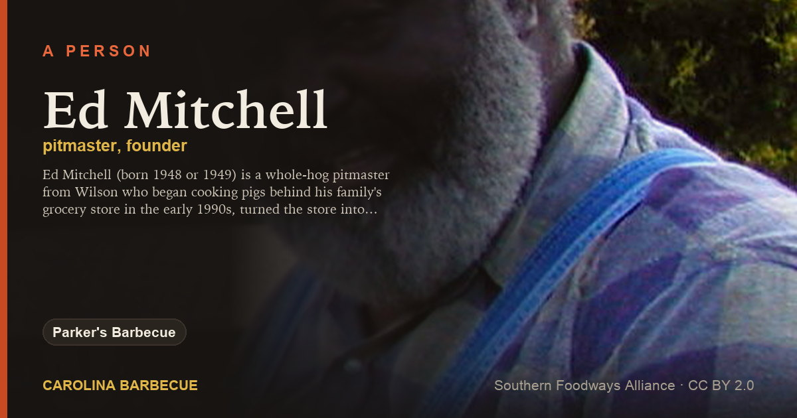
Ed MitchellThe Pitmaster, Pitmaster Ed Mitchell
Ed Mitchell (born 1948 or 1949) is a whole-hog pitmaster from Wilson who began cooking pigs behind his family's grocery store in the early 1990s, turned the store into Mitchell's Ribs, Chicken & Bar-B-Q, co-founded The…
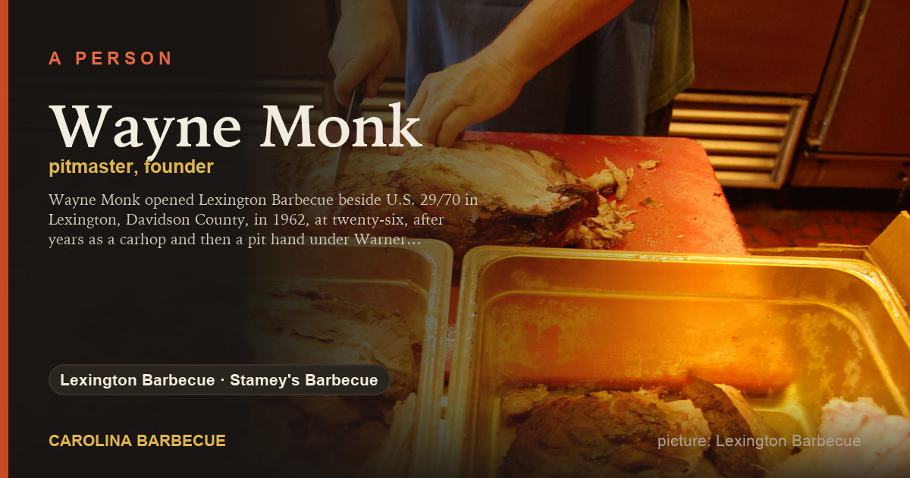
Wayne MonkHoneymonk
Wayne Monk opened Lexington Barbecue beside U.S. 29/70 in Lexington, Davidson County, in 1962, at twenty-six, after years as a carhop and then a pit hand under Warner Stamey, and he owns it with his son Rick.
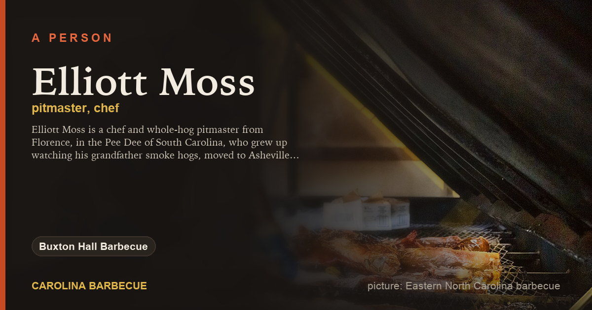
Elliott MossElliott Moss is a chef and whole-hog pitmaster from Florence, in the Pee Dee of South Carolina, who grew up watching his grandfather smoke hogs, moved to Asheville in 2007 to open The Admiral, and in August 2015 opened…
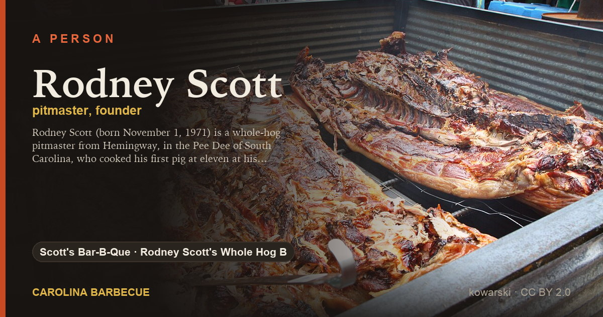
Rodney ScottPitmaster Scott
Rodney Scott (born November 1, 1971) is a whole-hog pitmaster from Hemingway, in the Pee Dee of South Carolina, who cooked his first pig at eleven at his parents' store, took the business over in 2011, and in February…
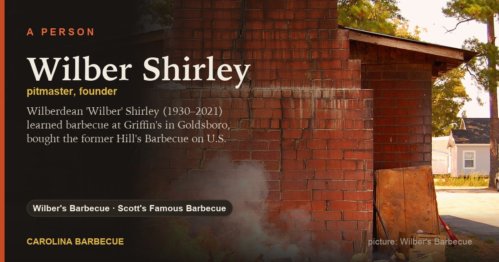
Wilber ShirleyWilberdean Shirley, Wilberdean 'Wilber' Shirley
Wilberdean 'Wilber' Shirley (1930–2021) learned barbecue at Griffin's in Goldsboro, bought the former Hill's Barbecue on U.S.
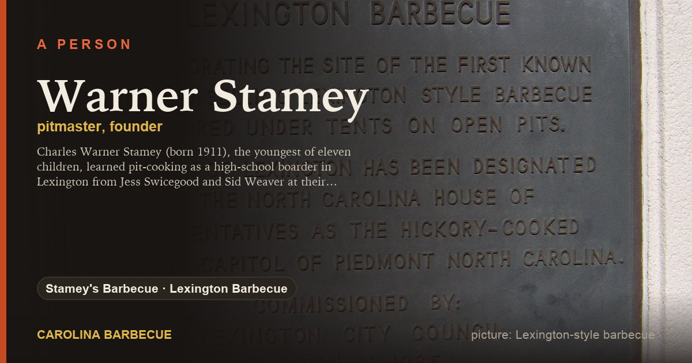
Warner StameyCharles Warner Stamey, C. Warner Stamey
Charles Warner Stamey (born 1911), the youngest of eleven children, learned pit-cooking as a high-school boarder in Lexington from Jess Swicegood and Sid Weaver at their tents across from the courthouse, sold barbecue…
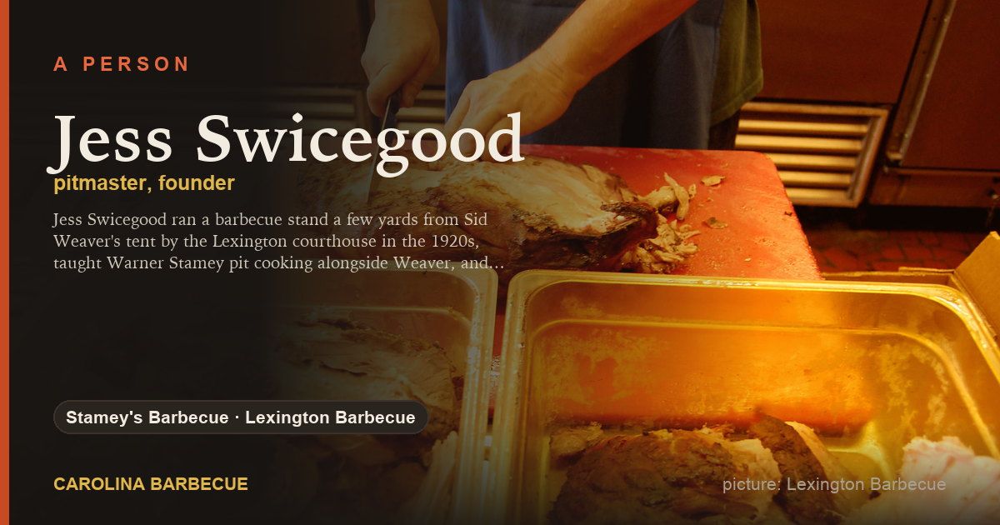
Jess SwicegoodJesse Swicegood
Jess Swicegood ran a barbecue stand a few yards from Sid Weaver's tent by the Lexington courthouse in the 1920s, taught Warner Stamey pit cooking alongside Weaver, and sold Stamey the business in 1938 — for $300, by…
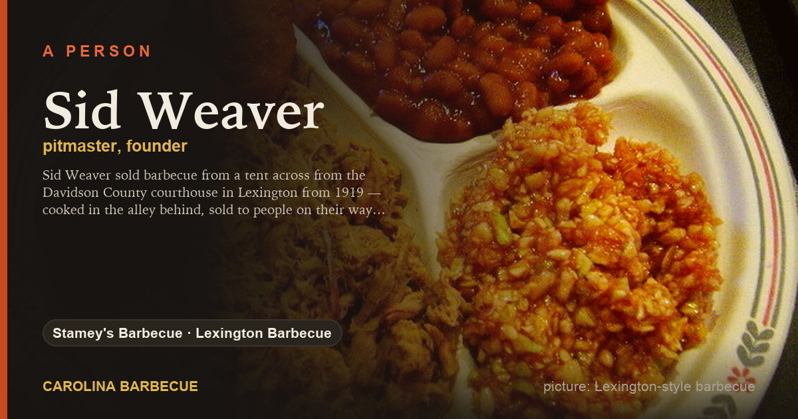
Sid WeaverSid Weaver sold barbecue from a tent across from the Davidson County courthouse in Lexington from 1919 — cooked in the alley behind, sold to people on their way to court — and is the first name in every account of…
Scholars (1)
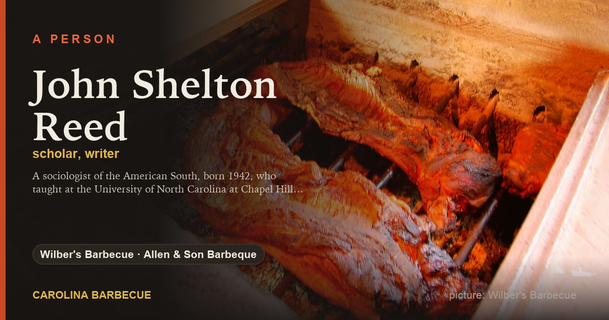
John Shelton ReedÉminence Grease, Eminence Grease, J. S. Reed
A sociologist of the American South, born 1942, who taught at the University of North Carolina at Chapel Hill from 1969 until 2000 and retired as William Rand Kenan Jr. Professor.
Writers (6)
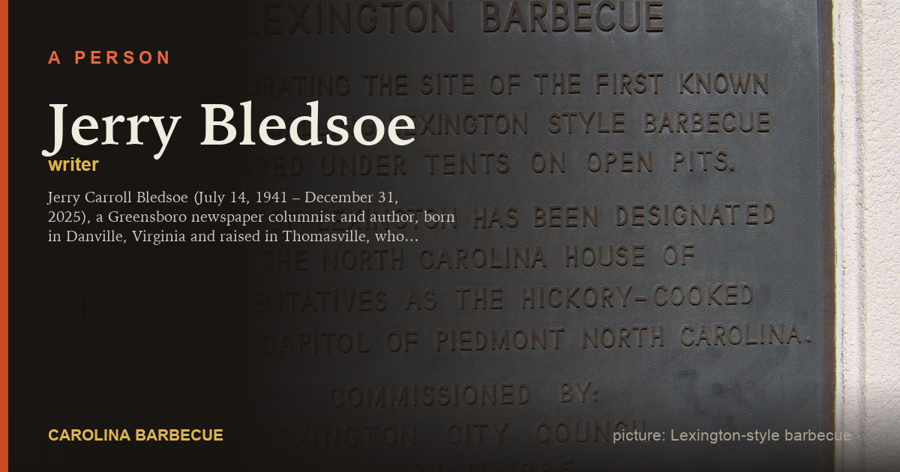
Jerry BledsoeJerry Carroll Bledsoe, the world's leading, foremost barbecue authority
Jerry Carroll Bledsoe (July 14, 1941 – December 31, 2025), a Greensboro newspaper columnist and author, born in Danville, Virginia and raised in Thomasville, who wrote for the Greensboro Daily News, later the News &…
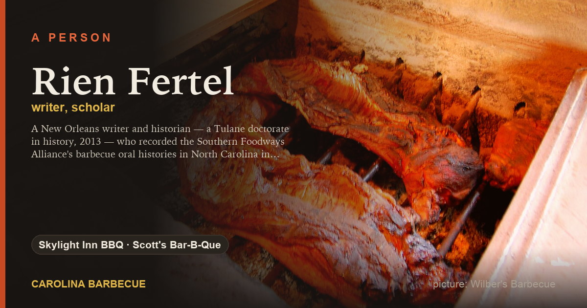
Rien FertelRien T. Fertel
A New Orleans writer and historian — a Tulane doctorate in history, 2013 — who recorded the Southern Foodways Alliance's barbecue oral histories in North Carolina in 2011 and South Carolina in 2012, then spent five…
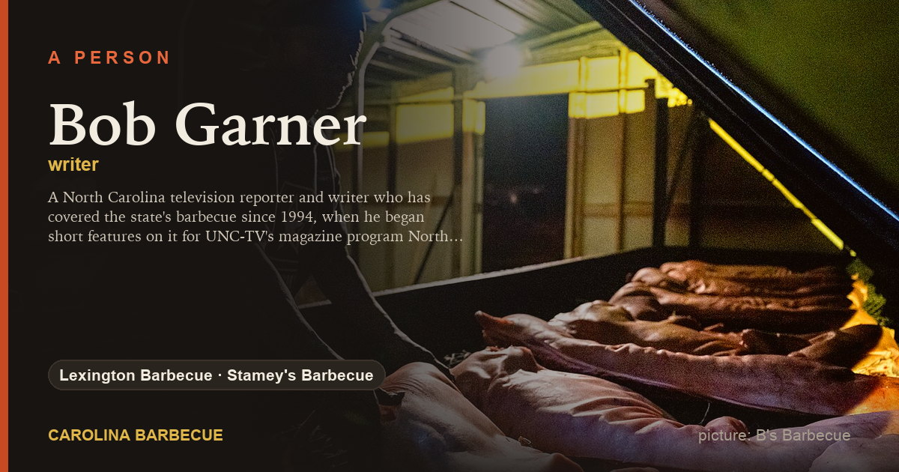
Bob Garnerthe barbecue man, Robert Garner
A North Carolina television reporter and writer who has covered the state's barbecue since 1994, when he began short features on it for UNC-TV's magazine program North Carolina Now.
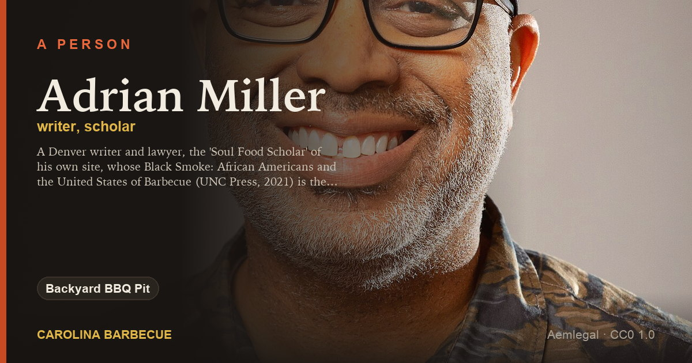
Adrian MillerAdrian E. Miller, the Soul Food Scholar
A Denver writer and lawyer, the 'Soul Food Scholar' of his own site, whose Black Smoke: African Americans and the United States of Barbecue (UNC Press, 2021) is the history of the Black cooks, pitmasters and restaurant…
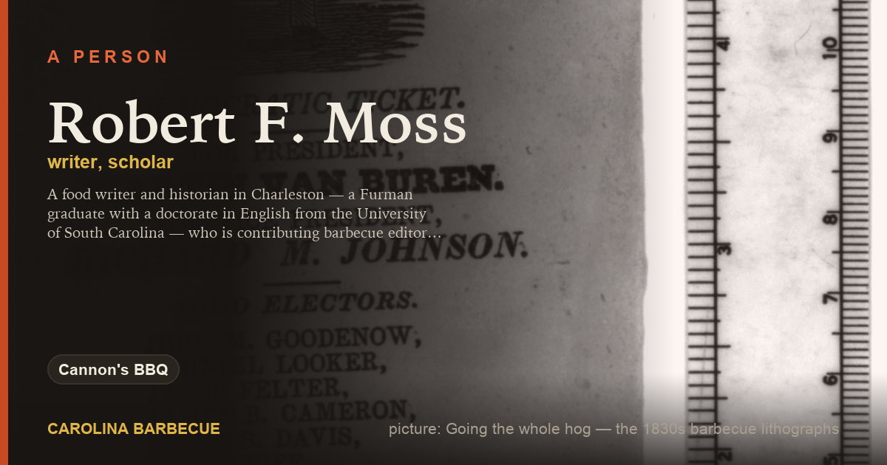
Robert F. MossRobert Moss, Robert F. Moss
A food writer and historian in Charleston — a Furman graduate with a doctorate in English from the University of South Carolina — who is contributing barbecue editor for Southern Living and was restaurant critic for the…
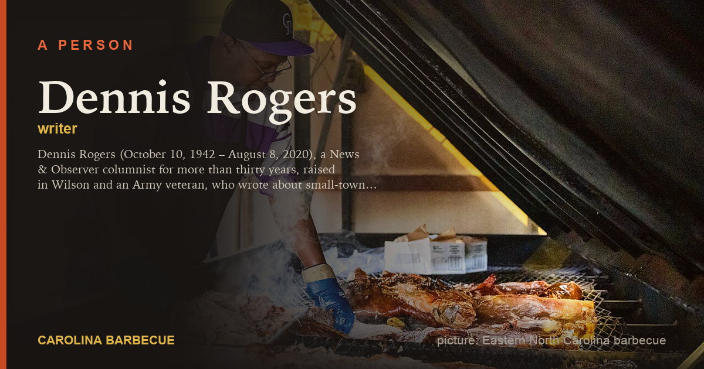
Dennis Rogersthe oracle of the holy grub
Dennis Rogers (October 10, 1942 – August 8, 2020), a News & Observer columnist for more than thirty years, raised in Wilson and an Army veteran, who wrote about small-town eastern North Carolina and its soldiers and, in…